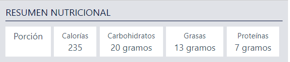
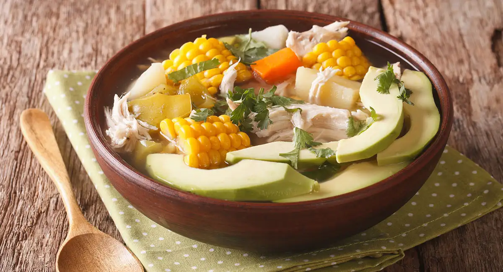

Mezcla en un recipiente, la harina, los huevos, el agua tibia, el azúcar, la sal y la manteca derretida.
Amasa todo muy bien hasta obtener una masa completamente suave; deja reposar la masa en un lugar templado
por espacio de dos horas.
Sofríe la cebolla en aceite caliente, junto con la pimienta, la sal, el orégano, y el ají amarillo.
Pon el pollo, previamente cocido y desmenuzado, y la papa en el jigote junto con el consomé que sobró
durante su cocción.
Mezcla todos los ingredientes muy bien con el jigote y deja enfriar. Cuando esté lista la masa, divídela en
porciones como para contener el jigote, y extiende cada porción en forma de circulo.
Coloca en cada circulo una o dos cucharas del jigote, agregando una o dos rodajas de huevo cocido.
Pinta el extremo de la masa con clara de huevo o leche para que adhiera bien, aprieta y haz un repulgue
bastante grueso.
Fríelas en abundante aceite caliente, que cubra la mitad de la empanada, y retíralas del fuego cuando estén
doradas.

Ajiaco (Colombia)

Ingredientes
4 dientes de ajo triturado
2 tazas de crema de leche
3 libras de pechuga de pollo
4 mazorcas tiernas partidas en trozos
1 libra de papa criolla
1 rama de guascas
4 aguacates medianos
albahaca al gusto
sal al gusto
3 tallos de cebolla larga
16 tazas de agua
2 libras de papa sabanera
1 rama de cilantro
1 taza de alcaparras
tomillo al gusto
romero al gusto
Pasos
Poner las pechugas a hervir por 30 minutos (hasta que el pollo esté blando), luego agregar la cebolla, el
ajo, y la papa pastusa y sabanera en rodajas hasta que estas esten disueltas. Adicionar la sal, el tomillo,
la albahaca y el romero al gusto.
Se sacan las pechugas y la cebolla; Y al caldo se le agregan las mazorcas con la papa criolla permitiendo su
cocion a fuego lento hasta lograr la densidad deseada. Se le añaden las guascas 5 minutos antes de servirlo.
En caso de que el pollo se desee servir deshilado, se debe agregar en el momento de servirlo. Y en caso de
que sea en presa completa, se debe servir una porción en cada plato. También se pueden servir las carnes
deshilachadas mezcladas con la crema, y así dar una mejor apariencia.
El plato se acompaña con el aguacate; las alcaparras y la crema de leche se sirven aparte para que cada
persona se sirva a gusto.
Las mazorcas se sirven enteras o desgranadas con el ajiaco.